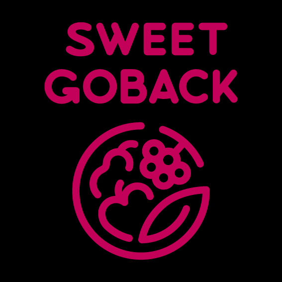
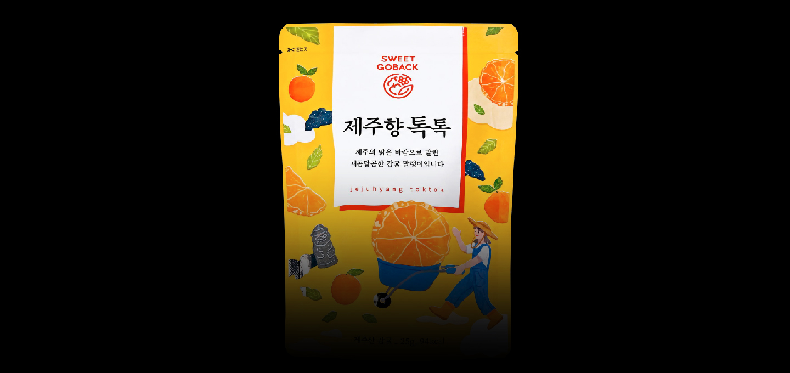
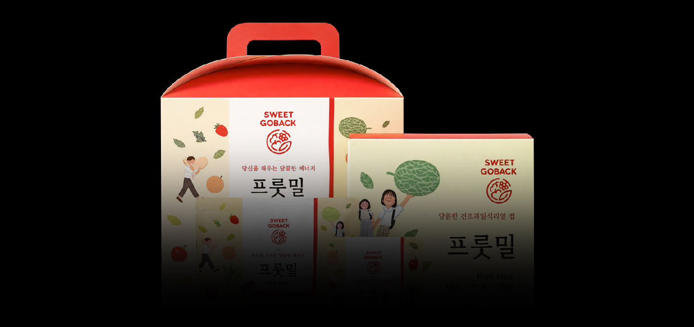

Our Pride in Healthy Food
We supply government-certified eco-friendly agricultural products that meet strict safety standards. We ensure compliance with certification requirements throughout production and distribution, providing consumers with safe and reliable products.
-

[SWEET GOBACK]
Sweet Confession, Back to SweetnessThe name Sweet Confession highlights the natural sweetness of our fruit cereal while carrying a double meaning. It represents both a heartfelt confession and the honest expression of sweetness without hiding anything. It also conveys the idea of restoring your energy and bringing you back to the comforting sweetness of nature, creating a brand image that is sincere, refreshing, and full of vitality.
-

01 Jeju Citrus DelightMade with 100% Jeju-grown mandarins, each fruit is carefully peeled and dried using SWEET GOBACK's unique drying process to preserve its natural flavor and sweetness. Unlike ordinary dried fruit, it offers a softer, chewier texture, making it a delicious and satisfying snack you can enjoy anytime.
-

02 FRUIT MEALFive 100% Korean Dried Fruits in One Pack!